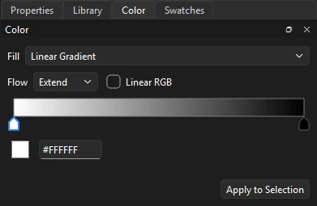
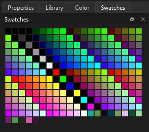

Drawing
Color, fills and strokes
Every shape has a fill, a stroke, or both. Fills can be solid colors, gradients or bitmaps; strokes have a color, a width and a style.
Picking colors
The quickest way to set colors is the pair of swatches near the bottom of the toolbox: the upper one is the stroke, the lower one the fill. Click either one to open a color picker, where you can also set transparency (alpha). The buttons beneath reset to black and white, or swap the two colors.
The Tool tab shows the same two colors under Color and Style, each with a checkbox to turn it off. To change the colors of artwork that is already drawn, select it and use the swatches on the Object tab.
To take a color from existing artwork, use the Eyedropper.
The Color panel
Open it from the Color tab in the panel dock, or (Ctrl+Shift+F9). The Fill list chooses the type of fill new artwork gets:
- None
- No fill.
- Solid Color
- A single color, with its hex value.
- Linear Gradient
- Colors blending along a straight line.
- Radial Gradient
- Colors blending outward from a center.
- Bitmap Fill
- An image from the library, tiled across the shape.
To apply the panel's fill to artwork that is already drawn, select it and click Apply to Selection.
Editing a gradient

- Click the gradient bar to add a color stop. A gradient can have up to 15 stops.
- Click a stop to select it, then set its color with the swatch or hex field below the bar.
- Drag a stop sideways to move it, or drag it down off the bar to remove it.
- Flow
- What happens past the ends of the gradient: Extend continues the end colors, Reflect mirrors the gradient back and forth, and Repeat starts it over.
- Linear RGB
- Blends in linear light, which gives brighter, more natural mid-tones between saturated colors.
Bitmap fills
Choose Bitmap Fill, then pick an image from the list of library bitmaps, or click Import... to bring one in. New shapes are filled with the image, tiled.
The Gradient Transform tool
Gradients and bitmap fills are fitted to the shape when you draw it. To change how they sit, press F for the Gradient Transform tool (it shares a slot with Free Transform) and click the fill. Drag its handles to move the center, stretch the gradient or bitmap, and rotate it. The two diamonds, on the top and left edges, skew it: drag one along its edge to slant the fill.
Swatches

The Swatches panel (Ctrl+F9) shows the document's saved colors. Click a swatch to make it the fill color, or the stroke color when the panel's Stroke option is checked. Add Swatch saves the current fill color. Right-click a swatch to duplicate or delete it. Swatches are saved with the document, including FLA files.
The ☰ menu beside Add Swatch has the rest:
- Sort by Color
- Grays first, then the colors in hue order.
- Clear Colors
- Leaves only black and white.
- Load Default Colors, Save as Default
- Your own default palette, kept by Phoenix for every document, or the built-in one until you save one.
- Web 216
- The 216 web-safe colors.
- Add Colors..., Replace Colors..., Save Colors...
- Color tables in and out: Adobe Color Table (
.act) files and GIMP palettes (.gpl).
Tagged swatches
Right-click a swatch and choose Convert to Tagged Swatch... to give it a name. A tagged swatch is a color of the linked palette in use: everything already painted in its color is linked to it, and changing it recolors all of that at once. Tagged swatches show a turned-down corner; Edit Tagged Swatch... opens the Palettes panel to change one.
Stroke styles
Besides solid lines, strokes can be Hairline, which stays one screen pixel wide at any zoom, Dashed, Dotted, and three hand-drawn styles: Ragged, Stipple and Hatched. Set the style on the Tool tab before drawing, or on the Object tab for selected strokes. The Ink Bottle applies the whole current stroke style to a stroke you click.
A stroke can vary in width along its length. Choose a profile from the Width setting, or shape one with the Width tool. Variable-width strokes in FLA files keep their profiles.
HSB and RGB fields in the Color panel, Lock Fill, gradient skew handles, sampling gradients and bitmaps with the Eyedropper, color palettes that import and export standard palette files, and palettes linked across documents.